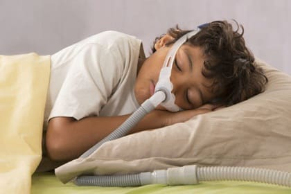
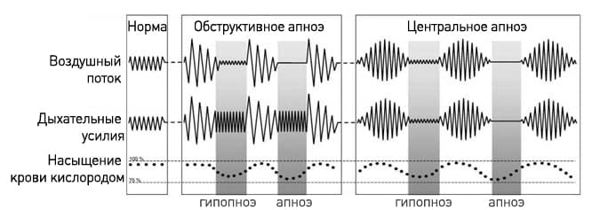
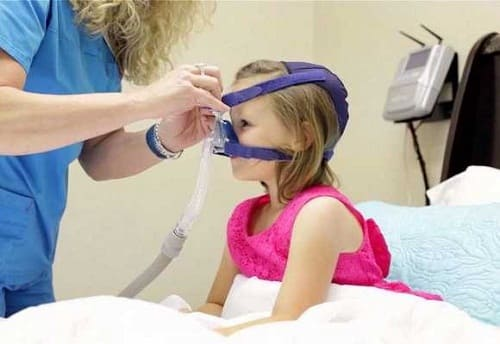
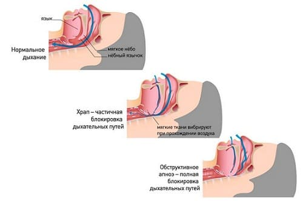

Временная остановка дыхания во сне, также называемая синдром обструктивного апноэ сна (СОАС), является часто оставляемой без внимания причиной недостаточного и беспокойного сна и, как следствие, плохих реакции и поведения. СОАС обычно вызывается преградой в носу или в горле, достаточно мощной, чтобы затруднять дыхание: заблокированные носовые проходы, увеличенные миндалины и/или аденоиды. Когда дыхательные пути сужены, ребенок часто просыпается и пугается из-за нехватки воздуха. Испуг провоцирует выброс адреналина, что в свою очередь возбуждает нервную систему и мешает сну. Мышцы, которые обычно в течение дня держат дыхательные пути открытыми, ночью во время сна расслабляются, сужая их. Воздух при прохождении через суженные дыхательные пути заставляет ткани дыхательных путей вибрировать, вызывая храп. Из-за того, что воздушные пути частично заблокированы во время сна, ребенок не проходит через нормальные стадии легкого и глубокого сна и поэтому его сон нарушен, хотя может казаться, что он спит. Плохой ночной сон на следующий день превращается в плохое поведение и плохую обучаемость.
ПРИЗНАКИ И СИМПТОМЫ
• Громкий храп. Дети с СОАС обычно храпят так же громко, как взрослые. Если вы слышите храп, находясь в другой комнате, это может быть первой подсказкой, что у вашего ребенка, возможно, СОАС.
• Дыхание преимущественно через рот. Возможно, ваш ребенок будет дышать через рот большую часть ночи (вместо нормального носового дыхания, которое наблюдается у большинства детей). Также вы, возможно, заметите, что в течение дня ребенок стал больше дышать через рот.
• Одышка и паузы в дыхании. Ребенок может храпеть и глотать много воздуха во время сна. Как правило, ребенок, страдающий СОАС, нормально дышит днем, но ночью его дыхание шумное и неровное, с частыми паузами длиной в 10—15 секунд, за которыми следует шумное и тяжелое «наверстывающее» дыхание.
• Частые переворачивания и изгибания во время сна, сон в необычных позах. Ребенок с СОАС будет стараться сгибать свои шею и тело, чтобы найти наиболее удобное для сна положение: на животике, спине, боку либо вытянув шею и широко открыв рот.
• Поскольку апноэ происходят в основном во время быстрого сна, а быстрый сон в основном наступает ранним утром, СОАС может усугубиться за несколько часов до того, как ребенок обычно просыпается. Это важно, поскольку ранним утром наименее вероятно, что родители услышат или увидят беспокойное дыхание ребенка во время сна.
• Чрезмерная усталость днем.
• Отсутствие других объяснений проблем с поведением.
• Плохая успеваемость в школе.

ЧТО ДЕЛАТЬ
Если вы подозреваете, что у вашего ребенка СОАС, ваш врач должен обследовать его. Но прежде чем запишетесь на прием, проведите домашнее обследование.
СОВЕТ ДОКТОРОВ СИРС: ПОДОЗРЕВАЙТЕ СОАС ПРИ СИНДРОМЕ НАРУШЕНИЯ ВНИМАНИЯ СОАС является часто упускаемой причиной синдрома нарушения внимания или синдрома нарушения внимания с гиперреактивностью. Обязательно оцените качество сна своего ребенка, если ему поставлен диагноз синдрома нарушения внимания. |
Домашнее обследование:
• Наблюдайте за сном своего ребенка. Поздним вечером сядьте и в течение нескольких часов смотрите на спящего ребенка. Обратите внимание на ротовое дыхание, остановки дыхания, одышку и беспокойный сон. Вы можете завести будильник на ночные часы и некоторое время понаблюдать за ребенком в ночное время, чтобы лучше понять, насколько проблемы устойчивы на протяжении ночи. Сделайте записи о поведении ребенка во сне, сколько раз он делает паузы в дыхании и сколько раз наблюдается одышка и по сколько минут каждую ночь.
• Запишите на видео сон своего ребенка. Как правило, ваш педиатр или ЛОР-врач может поставить диагноз или по крайней мере укрепить свои подозрения, просто просмотрев видеозапись процесса сна вашего ребенка. Ваш врач в основном будет обращать внимание на звуки и типы затрудненного дыхания.
Обследование у ЛОР-врача:
• Запишитесь на обследование к вашему педиатру или к ЛОР-врачу. Обязательно возьмите с собой дневник и видео со сном вашего ребенка. Врач обследует дыхательные пути, начиная с носа, и уделит особое внимание миндалинам и аденоидам.
• Врач, как правило, сможет определить диагноз и назначить необходимое лечение, выслушав историю болезни вашего ребенка, изучив составленный вами журнал сна и просмотрев видеозапись. Если есть проблемы с миндалинами и/или аденоидами, они должны быть решены.
• Если неясно, настолько ли опасна временная остановка дыхания во сне, чтобы потребовалось хирургическое вмешательство, ваш врач может порекомендовать следующие шаги.

Изучение сна:
• Ночная полисомнография — изучение сна, для краткости — золотой стандарт для диагностирования и оценки СОАС. Ваш ребенок проведет ночь в лаборатории сна (скажите ему, что это нечто вроде комнаты в отеле, в которой установлено множество видеоаппаратуры). При помощи металлических пластинок, закрепленных на голове и груди вашего ребенка, его сон будет записан, в первую очередь для того, чтобы проверить, что он совпадает с нормальной схемой чередования поверхностного и глубокого сна. На один из пальцев вашего ребенка будет безболезненно прикреплен маленький зажим, который будет измерять уровень кислорода в его крови на протяжении ночи, чтобы определить, насколько падает содержание кислорода в крови вашего ребенка во время обструкции. Также будет сделана электрокардиограмма. Тщательное исследование физиологических изменений, которые происходят во время сна, очень важно. Постоянные апноэ могут не только ослаблять физическое развитие ребенка и его способности к обучению, но и оказывать дополнительную нагрузку на сердце. Изучение сна — наиболее точный метод диагностики обычного храпа, который не требует никакого лечения, и СОАС, который нуждается в лечении.
Сокращенное изучение сна:
• Если у нас нет желания провести ночь в лаборатории сна, ваш врач может порекомендовать вам изучение сна во время тихого часа, что является сокращенным вариантом этого исследования в течение 2— 3 часов дремоты. Однако на него можно положиться, только если оно показало положительные результаты. «Обычное изучение сна ю время дремоты» не исключает возможности СОАС. Ваш врач может затем порекомендовать вам более тщательное изучение сна на протяжении ночи.
Если СОАС у вашего ребенка развивается из-за увеличения миндалин или аденоидов, ваш врач наверняка направит вас на удаление миндалин и аденоидов как можно скорее, в дополнение к удалению препятствия вы можете помочь своему ребенку дышать и спать лучше, применив следующие домашние средства:
СОВЕТ ДОКТОРОВ СИРС: ВОСПРИНИМАЙТЕ СОАС СЕРЬЕЗНО Если вы считаете, что плохие сон, поведение или школьная успеваемость вашего ребенка могут быть вызваны СОАС, обязательно проведите тщательное исследование совместно с врачом и найдете подходящее лечение. По нашему опыту, многие проблемы с обучением и поведением могут быть связаны с СОАС, но диагноз может быть не поставлен. |

Здоровье ребенка от докторов Сирс / Сирс У. и др.